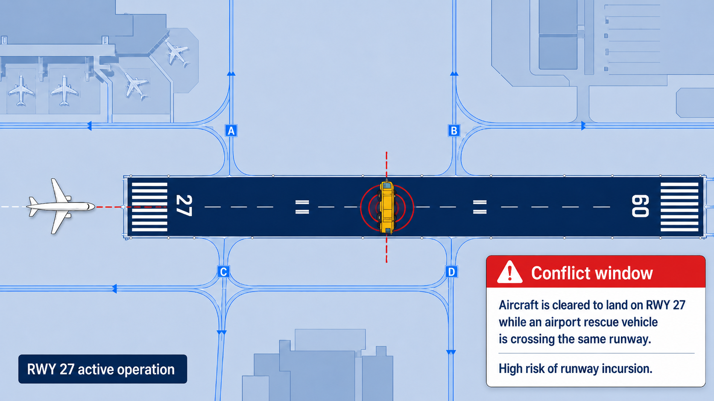

ATC FlowLens
Explainable runway safety and air traffic control decision-support dashboard.

A runway conflict can form faster than a controller can rebuild the full picture.
The problem is not simply “many aircraft.” ATC workload rises when traffic, voice communication, weather, runway crossing, vehicle movement, and coordination happen at the same time.
What the controller is tracking
Aircraft approaching, landing, departing, or taxiing; active runway status; airport vehicles; runway crossing requests; weather and visibility; radio communication; readbacks; flight strips; and coordination across ATC units.
Where workload turns into risk
Critical information may be spread across different displays, voice communication, human memory, and procedure assumptions. When the time-to-conflict is short, even a small delay in recognizing the full picture can matter.
The gap we focus on
A landing or departing aircraft can conflict with a vehicle if clearance status, vehicle movement, and aircraft timing are not interpreted together. ATC FlowLens focuses on that exact intersection.
The runway risk is already visible in safety data and recent incidents.
Sources: FAA Air Traffic by the Numbers FY2024, NTSB DCA26MA161, BEA LATAM 2213 event page, AP/NTSB Austin coverage.
The tools exist, but the runway picture can still fragment under pressure.
What ATC already has
Modern ATC/ATM uses radar, ADS-B, MLAT, surface surveillance, electronic flight strips, A-SMGCS, RIMCAS/RMCA, STCA/MTCD, CPDLC/Data Comm, AMAN/DMAN, TFDM, and SWIM. These systems are important, but they are not equally available everywhere.
Why the gap still exists
Advanced surface tools such as ASDE-X, ASSC, A-SMGCS, and RIMCAS are valuable but can be expensive and complex. Voice communication also remains common, especially in tower and ground operations, so clearance state and runway timing can still require manual interpretation.
Where FlowLens fits
Signals already there
Aircraft, vehicles, runway, clearance, weather, communication logs.
FlowLens layer
Time-to-conflict, workload scoring, event explanation, replay.
Human stays in command
Controller remains the decision-maker. The tool supports awareness and training.
Sources: ICAO Global Runway Safety Action Plan, MITRE surface safety prototypes, SKYbrary RIMCAS, FAA AIM ASDE-X/ASSC.
ATC FlowLens turns runway movement, clearances, and workload into one explainable view.
The product does not automate ATC. It connects operational signals into a single timeline so teams can detect, explain, and replay runway risk.
Runway status at a glance
Tracks whether a runway is clear, occupied, being crossed, used for takeoff, or receiving an inbound landing aircraft.
Clearance memory
Maintains operational states such as cleared to land, cleared for takeoff, hold short, line up and wait, cleared to cross, and go around.
Time-to-conflict
Compares estimated aircraft touchdown or runway entry time with estimated vehicle runway clear time.
Communication in sequence
Organizes tower, pilot, and vehicle messages into an event history that can later support speech-to-text or readback mismatch detection.
Workload signal
Scores workload using traffic count, radio calls, active clearances, vehicle movements, weather, runway changes, and active alerts.
Replay that explains
Turns a risk event into a training object: what happened, when it happened, why the alert appeared, and what action category should be considered.
From aircraft and vehicle timing, FlowLens calculates the conflict before it becomes obvious.
Aircraft inbound
BAW123 is 1.8 NM final, speed 145 kt, cleared to land RWY 27.
Vehicle crossing
ARFF-2 is cleared or starts to cross RWY 27 during an active runway operation.
Timing check
The engine estimates touchdown in 42 seconds and vehicle clear time in 58 seconds.
Conflict window
Vehicle clear time is later than aircraft touchdown time. Predicted overlap: 16 seconds.
Clear explanation
The dashboard shows alert severity, reason, relevant objects, workload state, and replay timeline.
Example alert
HIGH RUNWAY CONFLICT RISK. BAW123 is cleared to land RWY 27. ARFF-2 is cleared to cross RWY 27. Vehicle clear time is later than aircraft touchdown time.
Processing pipeline
Inputs: aircraft, vehicle, runway, clearance, communication, weather. Logic: runway occupancy model, clearance state engine, time-to-conflict, workload score. Output: alert, reason, action category, replay timeline.
Conflict rule
IF aircraft.status = "cleared_to_land" AND vehicle.status = "cleared_to_cross" AND aircraft.runway = vehicle.runway AND vehicle_clear_time > aircraft_touchdown_time THEN trigger HIGH runway conflict alert.
The first prototype proves the runway safety logic without needing live ATC data.
What we can build now
One simulated airport layout with runway and taxiway, three to five aircraft, one to two airport vehicles, clearance and communication logs, weather or visibility status, rule-based conflict detection, time-to-conflict alerting, workload scoring, and replay mode.
Why it is buildable
It avoids live ATC data, regulatory integration, and certification dependency. The team can still demonstrate a credible safety concept using realistic scenarios and transparent logic.
Why it still creates value
Training centers and airport safety teams need explainable scenarios, not only raw alarms. FlowLens can become a reusable safety learning environment.
The practical entry point is training, replay, and runway safety readiness.
Who feels this problem
Airport operators, Air Navigation Service Providers, ATC training centers, aviation academies, airport safety teams, and airport rescue and firefighting units.
Adoption path
1. Training and simulation tool. 2. Safety briefing and scenario replay product. 3. Airport operation support prototype. 4. Research collaboration. 5. Future certified decision-support exploration.
ATC FlowLens fits BUILD by turning advanced technology into practical runway safety support.
Main focus area
Advanced Technology and Innovation through decision support, prediction, workload scoring, and explainable runway safety visualization.
Additional value
Social Impact and Sustainability through safer runway operations, better coordination, and future reduction of avoidable fuel waste.
Why it can stand out
The idea is specific, evidence-backed, feasible as an MVP, and positioned carefully for a safety-critical aviation domain.
Start with a runway safety simulator. Grow toward an explainable ATC training platform.
Phase 1: Prove the scenario
Simulated runway map, aircraft and vehicle movement, clearance log, time-to-conflict alert, workload indicator, and replay timeline.
Phase 2: Add communication intelligence
ATC-style speech-to-text, readback mismatch detection, scenario generator, multi-runway support, and richer workload model.
Phase 3: Expand into training analytics
Integration with airport operation datasets, tower-ground training simulator, safety analytics dashboard, and research pathway toward certified support.
Closing thought
ATC FlowLens is not trying to automate the controller. It gives controllers, trainers, and safety teams a clearer lens on runway flow, workload, and conflict risk when every second matters.